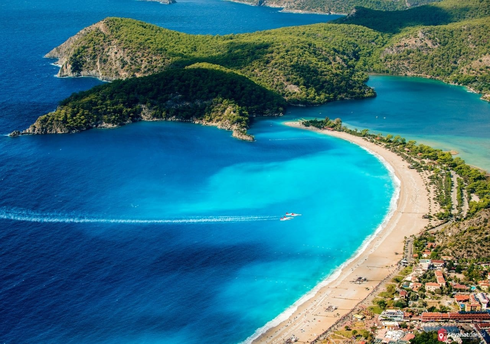
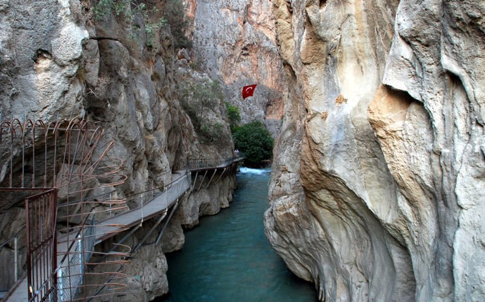
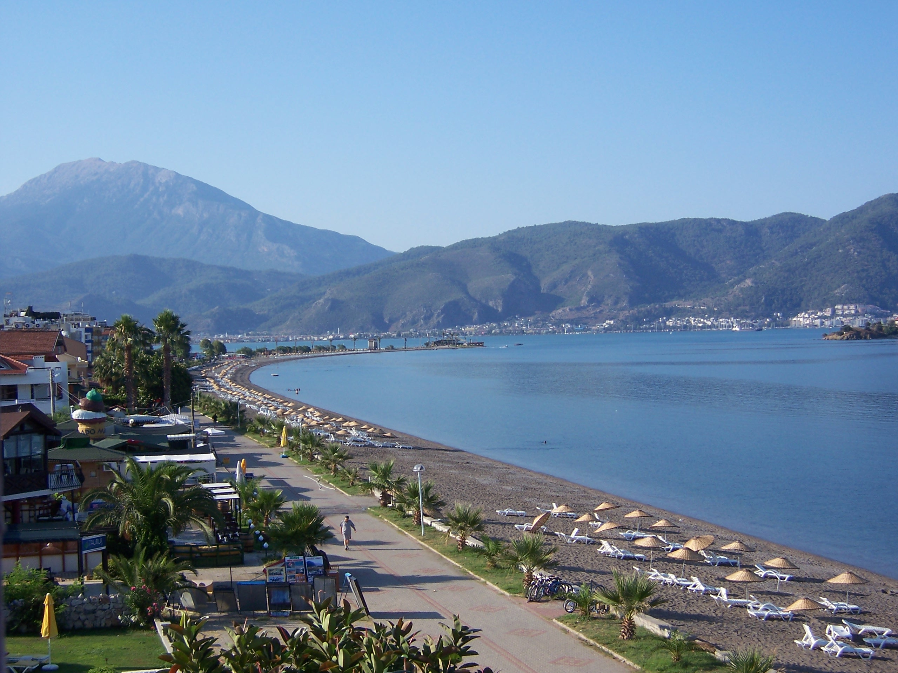
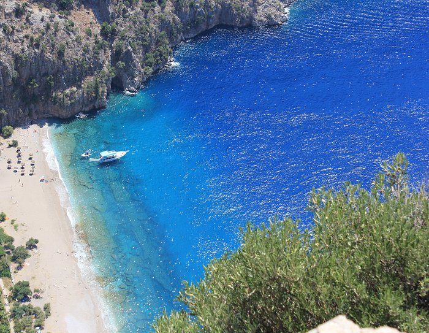

Fethiye,Muğla
Fethiye, Muğla ilinin 13 ilçesinden birisi ve ilçenin yönetim merkezi olan şehirdir.
Kentin eski adı Meğri'dir.
Bu adın, Rumların "uzak diyar" anlamına gelen Makri adlandırmasından türediği düşünülmektedir.
FETHİYE GEZİLECEK YERLER
Ölüdeniz

Likyalılarda ışık ve güneş diyarı, Ortaçağ’da “Uzak Diyar” olarak tanınan, Anadolu’nun güneybatısındaki Teke Yarımadası’nda bulunan Türkiye’nin önemli doğal güzelliklerinden biri…
Adıyla müstesna olan Ölüdeniz, tatilcilerin uğramadan geçmediği bir nokta.
Tatilciler doğa harikası bu yerde buranın muhteşem güzelliğinde, su sporları yapıyor.
Rüzgar sörfü ve kite sörf başta olmak üzere su kayağı, wakeboard gibi aktiviteler de ilgi geçiyor.
Saklıkent

Fethiye’nin konuklarına sunduğu önemli yerlerden biri de Saklıkent Kanyonu.
Doğanın insanlığa bahşettiği kanyon, günü birlik ziyaret için oldukça ideal bir rota.
Fethiye’den arabayla bir saatlik uzaklıkta bulunan Saklıkent Milli Parkı herkesin ziyaret etmesi gereken eşsiz güzelliklerdendir.
Çalış Plajı

Çalış plajı gün batımını izlemek için en iyi yer olarak bilinir.
Güneşin adalar üzerinden batışını ve renklerini izlemek muhteşem bir görsel oluşturur.
Temmuz ve Ağustos aylarındaki ortalama sıcaklık 32 derece civarındadır fakat 40 derecelere kadar çıktığı görülür.
Kış aylarında hava daha soğuk olur, ancak ortalama sıcaklık 10-15 derece cıvarında seyreder.
Çalış plajının kendine ait bir atmosferi vardır.
Fethiye merkezine giden düzenli minibüslerin yanında, Fethiye'ye farklı bir yolla ve keyifle ulaşmanızı sağlayan küçük bir motorlu tekne olan su taksileride vardır.
Çalış plajının sonunda "Kuş cenneti" olarak adlandırılan farklı kuş türlerinin yaşadığı küçük bir doğal park bulunmaktadır.
Çalış plajındaki en önemli şeylerden biride dev ve dost deniz kaplumbağaları Carretta Carretta'lardır.
Çalış plajı bu kaplumbağaların yuvalama plajlarından biridir.
Her yıl Çalış plajına gelirler ve yumurtalarını kumlara bırakırlar.
Zaman zaman bu yumurtadan çıkan yavruları ve ailelerini plajda görme şansınız olabilir.
Kelebekler Vadisi

Kelebekler Vadisi, Muğla ili, Fethiye ilçesi Ölüdeniz belde sınırları içerisinde bulunan vadi.
Sahip olduğu endemik türler nedeniyle dünya mirası olarak korunması önerilmiş 100 dağdan biri olan Babadağ'ın eteklerinde bulunan Kelebekler Vadisi, 8 Şubat 1995'te 1. derecede doğal Sit ilan edilmiş ve her türlü yapılaşmaya kapatılmıştır.
350 metreye ulaşan sarp kayalık duvarlarla çevrili olan Vadi ismini, barındırdığı 80'den fazla kelebek türünden ve özellikle kaplan kelebeğinden almıştır.
Kaynağı Faralya mahallesinde bulunan ve 50 metre yükseklikten dökülen şelale, Vadi'nin ortasından geçen bir dere ile Akdeniz'e ulaşır.
Kelebekler Vadisi'nin özgün coğrafi yapısı, bitey ve direyi bilim çevrelerinin, özellikle botanikçilerin ve entomologların inceleme ve laboratuvar çalışmalarına konu olmakta; ulusal ve uluslararası çevre örgütlerinin ve ekolojik oluşumların dikkatini çekmektedir.